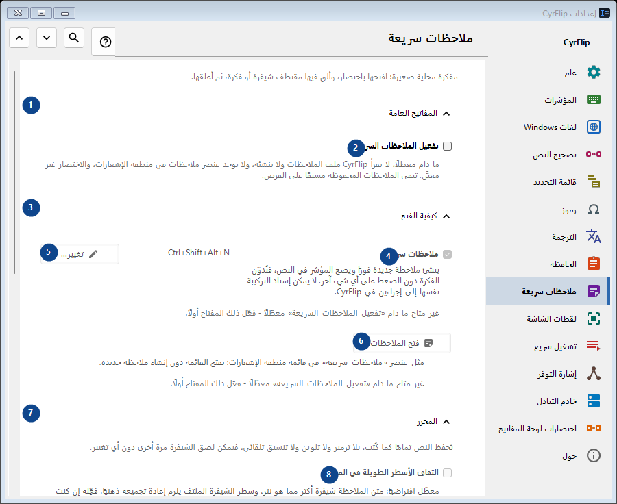
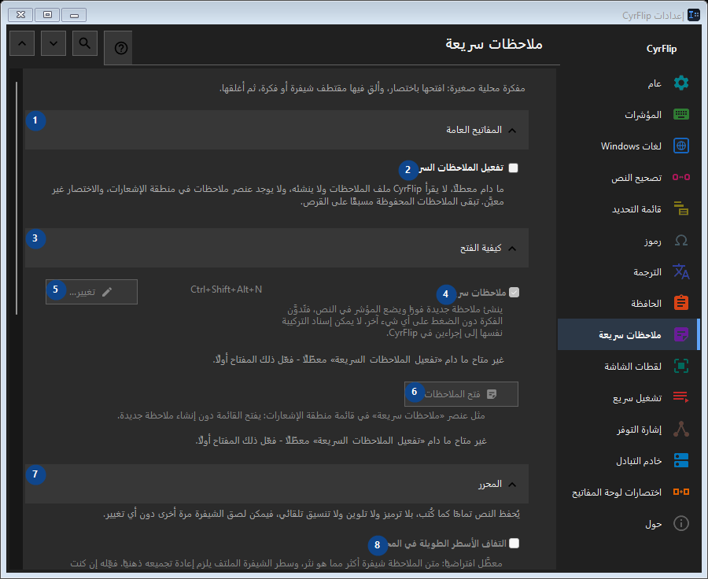

ملاحظات سريعة
الغرض
مفكرة محلية صغيرة: افتحها باختصار، وألقِ فيها مقتطف شيفرة أو فكرة، ثم أغلقها.


ترتيب الاستخدام
تُطبق الإعدادات فورًا. لا يوجد ترتيب إلزامي؛ استخدم المجموعات أدناه.
العناصر
1. المفاتيح العامة
استخدم هذا الأمر لتنفيذ الإجراء المذكور. اقرأ أي طلب تأكيد قبل الموافقة.
اختصاراتك2. تفعيل الملاحظات السريعة
ما دام معطلًا، لا يقرأ CyrFlip ملف الملاحظات ولا ينشئه، ولا يوجد عنصر ملاحظات في منطقة الإشعارات، والاختصار غير معيَّن. تبقى الملاحظات المحفوظة مسبقًا على القرص.
اختصاراتك3. كيفية الفتح
استخدم هذا الأمر لتنفيذ الإجراء المذكور. اقرأ أي طلب تأكيد قبل الموافقة.
اختصاراتك4. ملاحظات سريعة
غير متاح ما دام «تفعيل الملاحظات السريعة» معطّلًا - فعّل ذلك المفتاح أولًا. هذا العنصر غير متاح حاليًا. فعّل الميزة أو اختر إدخالًا أولًا.
اختصاراتك5. تغيير - ملاحظات سريعة
غير متاح ما دام «تفعيل الملاحظات السريعة» معطّلًا - فعّل ذلك المفتاح أولًا. هذا العنصر غير متاح حاليًا. فعّل الميزة أو اختر إدخالًا أولًا.
اختصاراتك6. فتح الملاحظات
غير متاح ما دام «تفعيل الملاحظات السريعة» معطّلًا - فعّل ذلك المفتاح أولًا. هذا العنصر غير متاح حاليًا. فعّل الميزة أو اختر إدخالًا أولًا.
اختصاراتك7. المحرر
استخدم هذا الأمر لتنفيذ الإجراء المذكور. اقرأ أي طلب تأكيد قبل الموافقة.
اختصاراتك8. التفاف الأسطر الطويلة في المحرر
غير متاح ما دام «تفعيل الملاحظات السريعة» معطّلًا - فعّل ذلك المفتاح أولًا. هذا العنصر غير متاح حاليًا. فعّل الميزة أو اختر إدخالًا أولًا.
اختصاراتك9. التصدير والتخزين
استخدم هذا الأمر لتنفيذ الإجراء المذكور. اقرأ أي طلب تأكيد قبل الموافقة.
اختصاراتك10. إضافة التواريخ عند التصدير
غير متاح ما دام «تفعيل الملاحظات السريعة» معطّلًا - فعّل ذلك المفتاح أولًا. هذا العنصر غير متاح حاليًا. فعّل الميزة أو اختر إدخالًا أولًا.
اختصاراتك11. تصدير كل الملاحظات إلى Markdown...
غير متاح ما دام «تفعيل الملاحظات السريعة» معطّلًا - فعّل ذلك المفتاح أولًا. هذا العنصر غير متاح حاليًا. فعّل الميزة أو اختر إدخالًا أولًا.
اختصاراتك12. حذف كل الملاحظات السريعة
غير متاح ما دام «تفعيل الملاحظات السريعة» معطّلًا - فعّل ذلك المفتاح أولًا. هذا العنصر غير متاح حاليًا. فعّل الميزة أو اختر إدخالًا أولًا.
اختصاراتك13. النقل إلى كمبيوتر آخر
استخدم هذا الأمر لتنفيذ الإجراء المذكور. اقرأ أي طلب تأكيد قبل الموافقة.
اختصاراتك14. تصدير...
ملف نصي مفتوح واحد يضم ملاحظاتك وسجل الحافظة الذي تختاره: يمكن قراءته في أي محرر أو على الهاتف واستيراده إلى CyrFlip على كمبيوتر آخر. الملف غير مشفّر. يعرض الاستيراد ما ستتم إضافته ولا يحذف شيئًا.
اختصاراتك15. استيراد...
استخدم هذا الأمر لتنفيذ الإجراء المذكور. اقرأ أي طلب تأكيد قبل الموافقة.
اختصاراتك